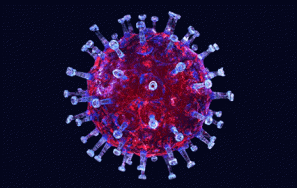
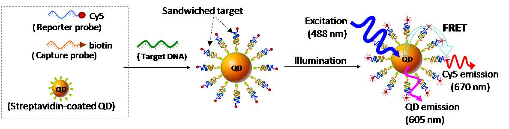
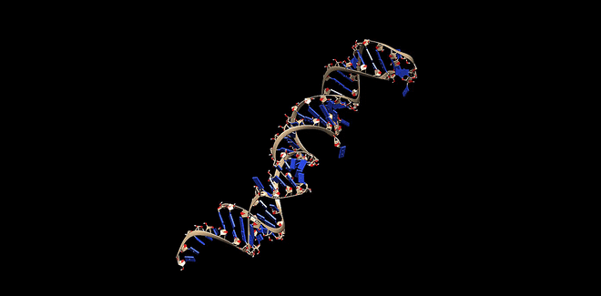
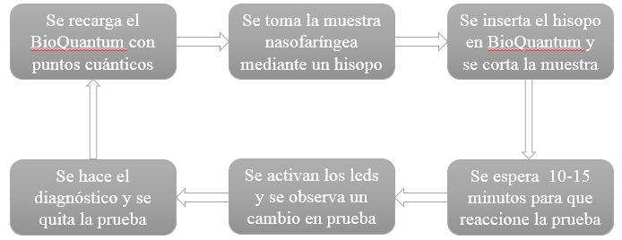

Biosensor óptico para la detección del COVID-19 mediante el uso de Quantum Dots.
Publicado el 15 de agosto del 2020

El 2020 ha sido un año que definitivamente traerá un recuerdo amargo a la sociedad, todo un reto desde su comienzo, son tiempos difíciles para todo el mundo, una pandemia no fue fácil ni lo será en cualquier momento de la historia, además sus consecuencias pueden impactar de manera grave a la sociedad como la conocemos, viviremos una “nueva normalidad”. Existen personas afortunadas que no tienen la necesidad laboral de salir de su hogar, sin embargo, no todos corren con la misma suerte, cada día millones de personas salen de su hogar por necesidad económica, arriesgando su propia vida y la de sus seres queridos. Además, otra porción de la población con menor suerte, que no cuenta con hogar y son expuestos diariamente.
Debido al alto índice de contagio que tiene esta enfermedad es difícil abastecer cada lugar con pruebas de diagnóstico suficientes para todas las personas, ya sea por su costo, requerimiento de laboratorios especializados y no contar con el personal capacitado para crear y aplicar las pruebas. Tener la cantidad de pruebas suficientes es necesario para poder tener una estimación de personas enfermas y tomar las medidas de prevención adecuadas.
Es por eso, que nuestro equipo de trabajo les presenta “BioQuantum”, que aporta muchas ventajas a la problemática actual. Es un método de diagnóstico especializado en detectar personas infectadas por Sars-Cov2, a partir de que se presentan los síntomas. Se trata de un biosensor óptico que funciona en base a puntos cuánticos, su principal función es detectar el SARS-CoV-2 de una manera rápida, barata y accesible para todos.
¿Qué es el SARS-CoV-2?
El SARS-CoV-2 es un tipo de coronavirus causante de la enfermedad por coronavirus de 2019 (COVID-19), cuya expansión mundial ha provocado la pandemia de 2019-2020. Se descubrió y se aisló por primera vez en Wuhan, China. Parece tener un origen zoonótico, es decir, se transmitió de un huésped animal a uno humano. El SARS-CoV-2 ataca principalmente al sistema respiratorio, y algunos síntomas suelen ser tos y disnea o dificultad para respirar y fiebre. En los casos más graves, pueden causar neumonía, síndrome respiratorio agudo severo, insuficiencia renal e, incluso, la muerte. Es por eso, que es muy importante para nuestro equipo el BioQuantum, debido a su rápida detección de la enfermedad, así, se podría dar un mejor tratamiento de la infección y menor propagación de ésta. Todo esto gracias a las propiedades de los Puntos Cuánticos.
Quantum Dots o Puntos Cuánticos
Los Quantum Dots (QD) son nanocristales semiconductores con espectros de excitación amplios, tiempos de fluorescencia largos y la capacidad de conjugarse con proteínas. Se utilizan ampliamente en la investigación biológica como herramientas de imágenes de fluorescencia, los QD tienen rendimientos cuánticos y fotoestabilidad mucho mayores que los de los tintes orgánicos en longitudes de onda similares. Actualmente los investigadores aprovechan la capacidad de los conjugados de ligandos QD para activar su internalización al unirse a sus respectivos receptores con fines de diagnóstico o tratamiento.
BioQuantum
BioQuantum es un biosensor basado en puntos cuánticos y detección del RNA de Sars-CoV-2, funciona con el siguiente principio: Mediante un par oligonucleótidos que son secuencias cortas de ADN o ARN, apoximadamente de 50 bases, se busca atrapar al ARN del virus, como si fuera un "sandwich", ya que, se pueden configurar para buscar partes específicas de RNA.
El par de oligonucleótidos son sintetizados sintéticamente y se diferiencian entre sí debido a dos razones, uno de ellos contiene un colorante llamado Cianina (Cy5) y la otra consta de una vitmina llamada biotin. Ambas cumplen un papel muy importante para la detección del virus.
La vitamina biotin reaccione con el QD y esta se pega en su superficie, mientras que la Cianina tiene el propósito de emitir fotones para su detección. En la presencia de RNA viral,esta restructuración crea una especia de puente, que gracias a la propiedades de los QD de tansferir energía, y la Cy5 de aceptarla y emitirla en rangos de color naranga, se da este proceso de detección.
En la siguiente imagen se encuentra el proceso de gráfico de la detección.
Visión
Ayudar a comunidades donde es difícil realizar pruebas PCR, la idea es lanzar el diseño de un prototipo de diagnóstico más accesible para la población en general y que tenga mayor alcance para que cualquier institución médica pueda utilizarlo con la distribución adecuada de los puntos cuánticos.
Ventajas
El biosensor de puntos cuánticos para la realización de diagnósticos tiene diversas ventajas:
- Es barato en comparación con otros métodos de diagnóstico.
- Fácil de reproducir.
- Dispositivo pequeño y compacto.
- Rápido.
- El prototipo es reutilizable incluyendo los frascos donde se colocan los puntos cuánticos.
- Los puntos cuánticos dan un resultado con mayor exactitud que otro tipo de fluoróforos.
Debilidades
Transporte y realización de los puntos cuánticos.
Funcionamiento del BioQuantum.
EXPLICACIÓN.

Más EXPLICACION

Explicación.
Aquí texto conclusion
Fuentes
- Manivannan, S., & Ponnuchamy, K. (2020). Quantum dots as a promising agent to combat COVID‐19. Applied Organometallic Chemistry. doi:10.1002/aoc.5887
- Michalet, X. (2005). Quantum Dots for Live Cells, in Vivo Imaging, and Diagnostics. Science, 307(5709), 538–544. doi:10.1126/science.1104274
- Barroso, M. M. (2011). Quantum Dots in Cell Biology. Journal of Histochemistry & Cytochemistry, 59(3), 237–251. doi:10.1369/0022155411398487
- Zhou, M., & Ghosh, I. (2007). Quantum dots and peptides: A bright future together. Biopolymers, 88(3), 325–339. doi:10.1002/bip.20655
- Wang, G., Li, Z., & Ma, N. (2017). Next-Generation DNA-Functionalized Quantum Dots as Biological Sensors. ACS Chemical Biology, 13(7), 1705–1713. doi:10.1021/acschembio.7b00887
- Zhang, C.-Y., Yeh, H.-C., Kuroki, M. T., & Wang, T.-H. (2005). Single-quantum-dot-based DNA nanosensor. Nature Materials, 4(11), 826–831. doi:10.1038/nmat1508
- Johns Hopkins University. (2005). New Nanosensor Uses Quantum Dots To Detect DNA. ScienceDaily.www.sciencedaily.com/releases/2005/12/051206090135.htm
- Wang, T., & Zhang, Y. (2010). Quantum Dots DNA Nanosensor. Wiley Analytical Science. https://analyticalscience.wiley.com/do/10.1002/gitlab.1555
Team
Aldo Arvey Marin Olvera
Estudiante de Licenciatura en Física en la UANL.
Susana Abigail González Robledo
Estudiante de Licenciatura en Física en la UANL.
Tania Carolina Acevedo Durán
Estudiante de Ingeniería en Biotecnología en el ITESM CCM.
Emiliano Marín Merino